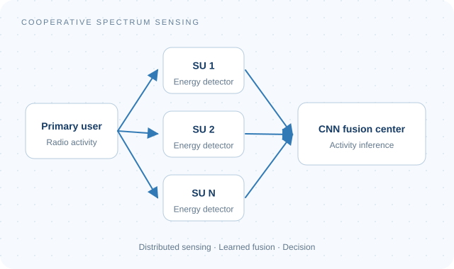
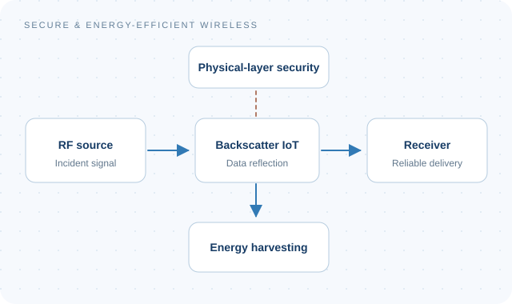

01

Machine Learning & Communications
- Learning-based cooperative spectrum sensing in cognitive radio networks.
- Signal processing and machine learning for intelligent wireless systems.
Electronics & Telecommunications Engineering Student
Ton Duc Thang University · Ho Chi Minh City, Vietnam
I am an undergraduate researcher working on secure and energy-efficient wireless communications. My research includes physical-layer security, RF energy harvesting, backscatter-enabled IoT, and reconfigurable intelligent surfaces.
I am an Undergraduate Researcher with AITECH and a Research Intern with WiCOM. I combine mathematical analysis and MATLAB Monte Carlo simulations with hands-on projects in machine learning, computer vision, and embedded systems.



ACADEMIC & RESEARCH JOURNEY
B.Eng. · Electronics & Telecommunications Engineering
Undergraduate Researcher
Ton Duc Thang University
Second Prize · Ton Duc Thang University
Research Intern
Electronics & Telecommunications Engineering
RESEARCH IN PRACTICE
Analytical research on physical-layer security and RF energy harvesting in backscatter-enabled IoT. Co-developed a source-assisted framework under active full-duplex eavesdropping, derived outage and intercept probabilities, and validated the analysis through Monte Carlo simulations.
Investigating digital signal processing, with a focus on modulation and demodulation, and exploring machine learning approaches for wireless communications.
MATLAB, Python, C/C++, and LaTeX. Wireless channel modeling, outage and secrecy analysis, Monte Carlo simulation, and numerical validation.
Student association and Youth Union roles at TDTU since 2023, alongside leadership of engineering project teams. English certification: Aptis ESOL B2.